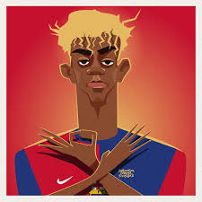

Bienvenido a mi página web personal. Aquí comparto información sobre mis proyectos y mis noticias de última hora como fiestas con enanos.
Lamine Yamal Nasraoui Ebana (Esplugas de Llobregat, Barcelona, 13 de julio de 2007) es un futbolista español que juega de extremo o centrocampista en el F. C. Barcelona de la Primera División de España.[5] Es internacional absoluto con la selección de España. Criado en el barrio mataronense de Rocafonda, fue fichado para las divisiones juveniles de Barcelona y formado en La Masia, debutó con el primer equipo en 2023, (15 años y 87 días) convirtiéndose en el jugador más joven en disputar un partido oficial con el Barcelona.[6] Es también el futbolista más joven en marcar en la historia de El Clásico (17 años y 105 días).[7] En su primera temporada completa, rompiendo múltiples récords, se consolidó como titular y fue reconocido como el mejor futbolista joven del mundo con el Trofeo Kopa otorgado por France Football y el Premio Golden Boy.[8] En 2025 se convirtió en el único futbolista en conquistar de forma consecutiva el Trofeo Kopa,[9] y obtuvo también el Balón de Plata como segundo mejor jugador del mundo.[10] A la Selección Española, la ha representado en diversas categorías juveniles. Con solo 16 años y 57 días, debutó con la selección absoluta, estableciendo un nuevo récord como el jugador más joven en la historia de España de hacerlo así y también de marcar un gol. En 2024, fue una de las figuras claves en la Eurocopa, donde España conquistó su cuarto título continental. Su actuación le valió el premio al Mejor Jugador Joven del torneo.[11] Es el jugador más joven en la Eurocopa en debutar y asistir (16 años y 338 días), además de anotar un gol (16 años y 361 días).